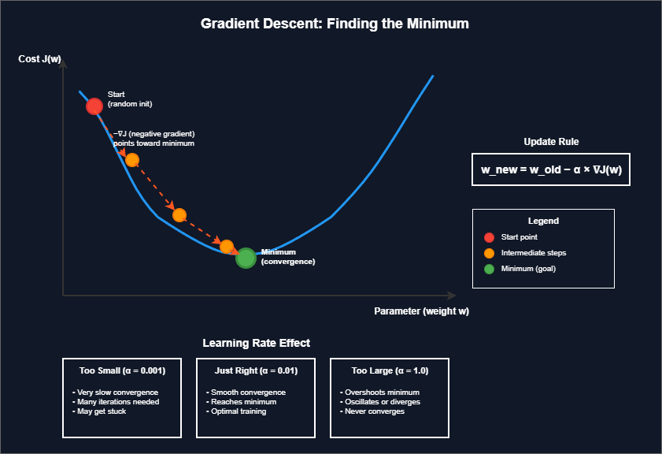

Gradient descent is how machine learning models learn. It is an optimization algorithm that finds the minimum of a cost function by iteratively adjusting model parameters. Without gradient descent, training neural networks and many other models would be computationally impractical.
The core idea: start with random parameter values, calculate how wrong the model is (cost), then adjust parameters in the direction that reduces the cost. Repeat until the cost stops decreasing.
The Update Rule
Key Concepts
- Gradient: The slope of the cost function at the current point. It points in the direction of steepest increase.
- Learning rate (α): Controls step size. Too large causes overshooting. Too small causes slow convergence.
- Convergence: When parameters stops changing significantly, the algorithm has found a minimum.
- Iteration/Epoch: One complete pass through the update process.
Analogy
Imagine standing on a foggy hillside, trying to reach the lowest valley. You cannot see the whole landscape, only the slope directly beneath your feet. Gradient descent is like taking steps downhill based on the local slope, trusting that repeated steps will eventually lead to the bottom.
Gradient Descent Visualization

Gradient descent iteratively moves parameters toward the minimum of the cost function.
Simple Example
import numpy as np
# Simple gradient descent for y = x^2 (minimum at x=0)
def gradient(x):
return 2 * x # derivative of x^2
x = 10.0 # starting point
learning_rate = 0.1
iterations = 50
for i in range(iterations):
grad = gradient(x)
x = x - learning_rate * grad
if i % 10 == 0:
print(f"Iteration {i}: x = {x:.6f}, cost = {x**2:.6f}")
# Output shows x approaching 0Three Variants of Gradient Descent
1. Batch Gradient Descent
Uses entire dataset to compute gradient. Stable but slow for large datasets.
2. Stochastic Gradient Descent (SGD)
Uses one sample at a time. Fast but noisy updates.
3. Mini-batch Gradient Descent
Uses small batches (32, 64, 128 samples). Balances speed and stability. Most commonly used in practice.
Learning Rate Selection
Learning rate selection matters:
- Too high: cost oscillates or diverges, never reaching minimum
- Too low: training takes excessively long, may get stuck
- Common practice: start with 0.01 or 0.001, then tune
Problems Encountered
- Local minima: For non-convex functions, gradient descent may find a local minimum instead of the global minimum
- Saddle points: Flat regions where gradient is near zero, slowing progress
- Vanishing gradients: In deep networks, gradients can become extremely small, stopping learning
Advanced Optimizers
Advanced optimizers build on basic gradient descent:
- Momentum: Accumulates past gradients to smooth updates and escape local minima
- RMSprop: Adapts learning rate per parameter based on recent gradient magnitudes
- Adam: Combines momentum and RMSprop. Default choice for most deep learning tasks
Linear Regression Example
# Linear regression with gradient descent
import numpy as np
X = np.array([1, 2, 3, 4, 5])
y = np.array([2, 4, 5, 4, 5])
w = 0.0 # weight
b = 0.0 # bias
learning_rate = 0.01
iterations = 1000
n = len(X)
for i in range(iterations):
y_pred = w * X + b
# Gradients
dw = (-2/n) * np.sum(X * (y - y_pred))
db = (-2/n) * np.sum(y - y_pred)
# Update
w = w - learning_rate * dw
b = b - learning_rate * db
if i % 200 == 0:
cost = np.mean((y - y_pred) ** 2)
print(f"Iteration {i}: w={w:.3f}, b={b:.3f}, cost={cost:.3f}")